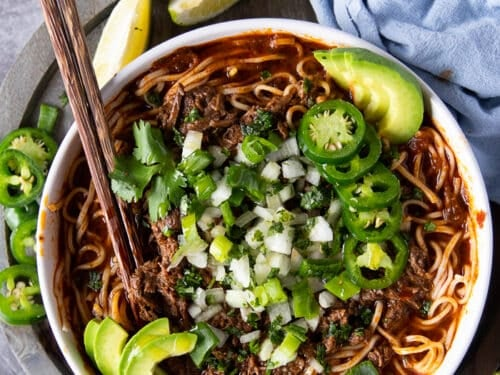

Beef birria ramen

Description
This beef birria ramen is a rich, spicy Mexican beef birria served as a Japanese ramen noodle bowl. Topped with fresh cilantro, onion, and a squeeze of lime, an unassuming broth delivers intense flavors while tender beef and noodles offer satisfying comfort in every bite.
Ingredients
- 10 dried gualjillo chilies, seeded
- 4 dried de árbol chilies
- boiling water, as needed
- 1 tablespoon avocado oil or other cooking oil
- 1/2 white onion, roughly chopped
- 4 garlic cloves, crushed
- 2 pounds beef chuck roast, cut into 1-inch pieces
- 2 beef shanks, cut into 1-inch pieces
- 2 beef short ribs
Steps
- For sauce base, first toast chilies: heat a dry griddle or skillet over medium heat. Toast guajillo chilies and chiles de arbol, turning often, until fragrant and lightly browned, being careful not to burn them. Place chilies in a bowl, cover them with boiling water, and soak until reconstituted, about 30 minutes.
- Meanwhile, heat oil over medium heat in a large pan. Add onion and garlic; cook and stir until soft, about 5 minutes. Add tomatoes and cook until they break down, about 5 minutes. Let the mixture cool.
- Place peppercorns, cloves, dried ginger, cumin seeds, thyme, marjoram, and oregano in a mortar and grind into a fine mix.
- In a blender, combine soaked chilies, 1/4 cup of the chile soaking liquid, onion-tomato mix, ground spices, chicken bouillon, and apple cider vinegar. Blend until smooth. Add a small amount of beef broth if needed for blending. Taste sauce; season with salt.
- To cook meat, place chuck roast, beef shanks, and beef short ribs in a large pot and pour the sauce over it. Add enough beef broth to cover meat by about 1 inch, then stir to combine. Bring to a boil over high heat, then add cinnamon stick, onion, garlic, and bay leaves. Cover, and reduce heat to low, and simmer until meat is tender and falling apart, about 2 1/2 hours. Remove and discard short rib bones; skim fat from surface of broth using a spoon. Reserve fat for another use, such as quesabirrias. Taste broth; season with salt.
- Bring a large pot of salted water to a boil, add ramen, and cook until tender, 7 to 20 minutes, or according to package instructions. Drain; divide noodles into bowls.
- To assemble the dish, ladle birria and broth over ramen. Top with chopped onion and cilantro. Serve with lime wedges.
Home